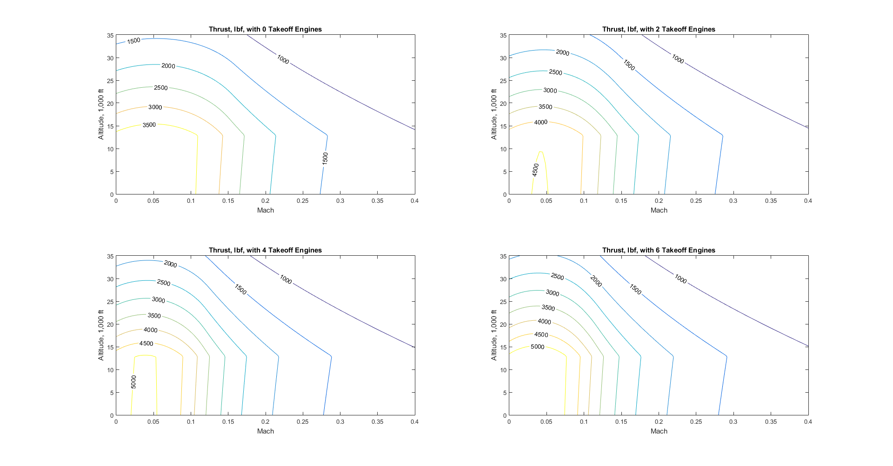

Script to Display Thrust available from DEP system
This is only from a propeller standpoint. This is not including the following efficiencies:
Contents
Setup
clear; clc prop_const prop_T v2=@(v,t,h,pt) sqrt(t/(1/2*p(h)*A(pt))+v.^2); % velocity ratio, velocity, thrust, h airfoil_polar % sets up fuselage drag cd_new % sets up airfoil drag polar equations_wash
Develop Thrust across operting regieme
[mmat,hmat]=meshgrid(linspace(0,0.4),linspace(0,35e3)); numopts=[0:2:6]; h=0; % deal with sea-level for now solopts=optimoptions('fsolve','display','none'); parfor nitr=1:length(numopts) for ita=1:100 for itb=1:100 Tmat(ita,itb,nitr)=... T(a(hmat(ita,itb)).*mmat(ita,itb),... hmat(ita,itb),... Pa,... numopts(nitr)+2); end end end figure(1); clf for nitr=1:length(numopts) subplot(2,2,nitr) [~,c]=contour(mmat,hmat/1e3,Tmat(:,:,nitr),[1000:500:6000]); set(c,'ShowText','on','LabelSpacing',400); title(sprintf('Thrust, lbf, with %g Takeoff Engines',numopts(nitr))) xlabel('Mach') ylabel('Altitude, 1,000 ft') end